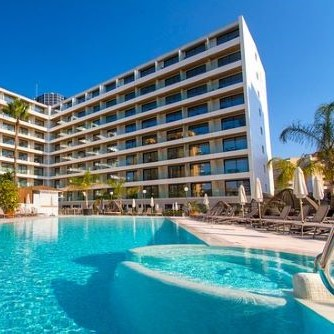

|
 |
 |
| ↑ Картинка відкриється в новому вікні збільшена вдвічі |
|
| Готель "Міднайт Сіті" - це невеликий курортний комплекс,
розташований серед живописних зелених лісів та гірських хребтів.
Це місце пропонує неймовірні краєвиди на гори, долини та річку, що оточують його.
Кожен номер у готелі має велике вікно з панорамним видом, що дозволяє гостям
насолоджуватися природою, не виходячи з номеру. Тут також є красивий сад з екзотичними рослинами
та зонами відпочинку, де можна розслабитися і насолодитися спокоєм і тишею гірського краю. |
 |
|
|
| Готельний бізнес - це вид діяльності, пов'язаний з наданням розміщення та інших послуг
для тимчасового перебування гостей. Готель може бути різного розміру і класифікації - від невеликих
сімейних готелів до розкішних готелів класу "п'ять зірок". У бізнес-готелях часто є ресторани,
конференц-зали, спа-центри та інші додаткові послуги для зручності гостей. Важливо мати гарну команду персоналу,
яка забезпечить високий рівень обслуговування та комфорту для гостей. Також важливо мати стратегію маркетингу
та продажу, щоб залучати нових клієнтів і підтримувати вірних. |
Готель розташовується в центральній частині міста,
поруч з головними визначними місцями та зручностями. Цей готель може бути високим з
вражаючою архітектурою та стильними номерами. У ньому можуть бути ресторани, спа-центр, басейн та
тренажерний зал для гостей. Персонал привітний та професійний, завжди готовий вам допомогти.
Гарний готель створить атмосферу комфорту та розкоші під час вашого перебування. |
| Цікавий готель на гарячих джерелах може мати комфортні номери з прямим доступом до термальних вод.
Це може бути розкішний комплекс з басейнами з гарячою водою, спа-процедурами і унікальними джерельними процедурами.
Гості такого готелю можуть насолоджуватись краєвидом на гори, вечірніми масажами та романтичними вечорами біля джерел.
А також це може бути ідеальне місце для відпочинку та відновлення здоров'я після насиченого дня. |